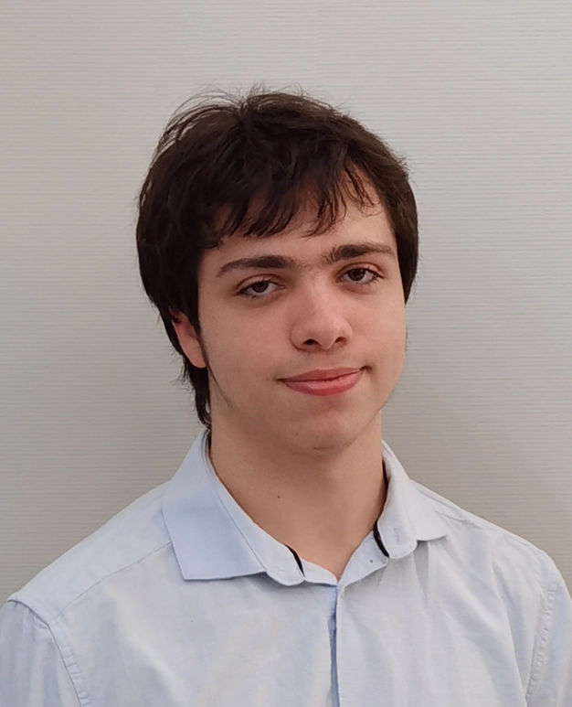
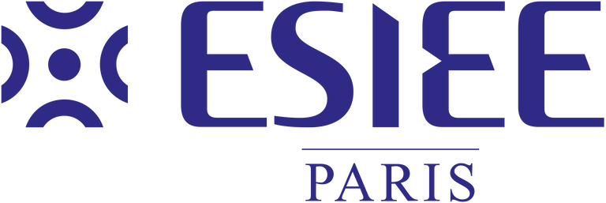
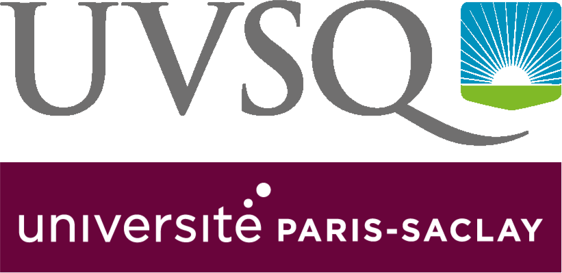
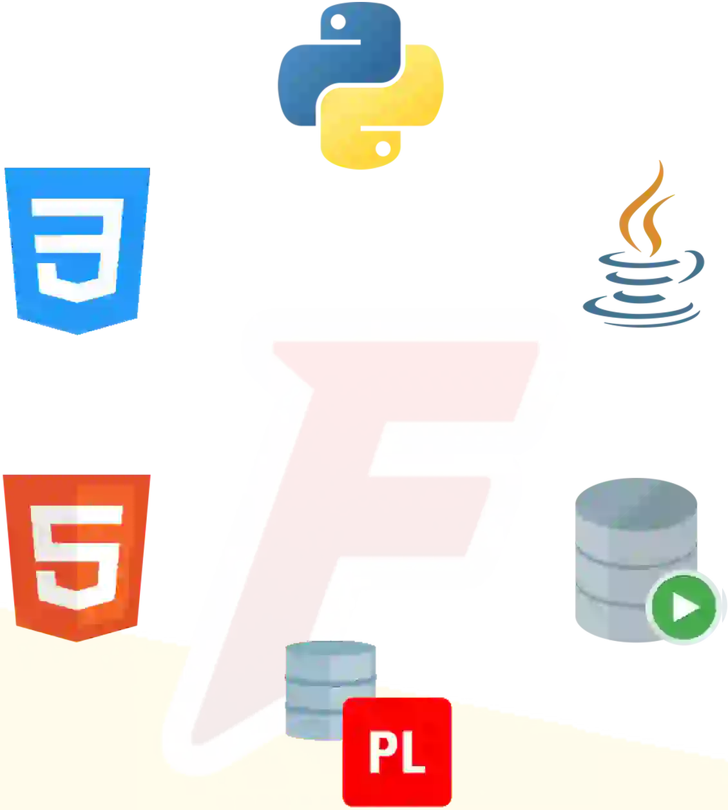
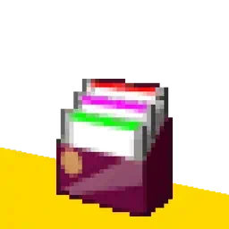
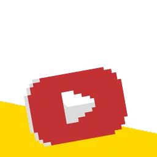
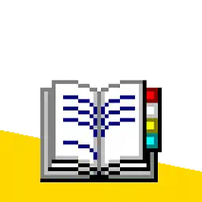

Bonjour, je suis Matthieu FARANDJIS et j'ai 21 ans.
Bienvenue sur mon site !
Je suis en première année de formation ingénieur IMAC à l'ESIEE Paris (Université Gustave Eiffel, CCI Paris Île-de-France), la seule formation publique d'ingénieur qui allie Arts et Sciences !
Je suis diplômé d'un BUT Informatique de l'IUT de Vélizy-Villacoublay (2022-2025).
Ce site vous permet de mieux me connaître.
Que ce soit ma personnalité, mes passions ou mes projets universitaires, professionnels et personnels.
Vous pouvez également y retrouver mes moyens de contacts.
Je porte un intérêt au monde technologique depuis très longtemps. Mes principales passions sont l'informatique, la télévision, les séries d'animations et les jeux vidéo.
Cela m'a encouragé à développer mon expertise en informatique pendant 3 ans (BUT Informatique), puis à axer mes compétences sur le monde audiovisuel et du multimédia (Ingénieur IMAC).
Présentation du 02/12/2025.
Le CV disponible peut ne pas être à jour.
Bonne visite !
J Voir ma vidéo de présentation
G Voir mon CV

Depuis 2025
« La seule formation publique d'ingénieur en arts et sciences »
Je suis un futur ingénieur IMAC, un futur ingénieur qui est capable de comprendre aussi bien le monde de la technique que le monde des créatifs.
Cette formation me permet d'approfondir mes compétences en informatique acquises en BUT Informatique tout en me professionnalisant sur le design ou encore le montage vidéo.
IMAC signifie : Image, Multimédia, Audiovisuel et Communication.
C'est une formation de la prestigieuse école ESIEE Paris, membre de l'Université Gustave Eiffel (ex-UPEM)
Fiche ESIEE Paris
Site web de la formation IMAC
Accréditation CTI

2022 - 2025
Je suis diplômé d'un BUT Informatique parcours développement d'applications de l'IUT de Vélizy, composante de l'Université de Versailles Saint-Quentin-en-Yvelines.
L'UVSQ est membre de l'Université Paris-Saclay.
J'ai effectué de nombreux projets et eu deux stages lors de mon cursus à Vélizy.
Mes projets à l'IUT
Mes stages

Du lycée à l'école d'ingénieur, j'ai acquis différentes compétences :
Langages de programmation : Python, Java, C, C++, Bash
Développement web : HTML, CSS, JavaScript, PHP, NodeJS
Base de données : Oracle SQL, PL/SQL, SQLite, MariaDB, PostgreSQL, MongoDB, Sparql, Neo4J
Systèmes Linux : CentOS, Debian, Ubuntu
Créatif : Adobe Premiere Pro
Langue : Anglais niveau B2 (TOEIC : 805/990)
Mais aussi... Git, suite JetBrains, Visual Studio, Microsoft 365
J Voir en vidéo mes projets favoris
F Voir mes projets
N'hésitez pas à découvrir les autres pages de mon site, à télécharger mon CV ou encore à me contacter.

Je présente ici tous mes projets depuis 2019 et mes expériences professionnelles.
Ce portfolio est une preuve de mes capacités et de mes connaissances.

Sur ma chaîne YouTube, vous retrouverez ma présentation et la présentation de mes projets favoris en vidéo.

Vous retrouverez ici les sources des polices et icônes que j'utilise.
J'utilise ces contenus pour un usage personnel et non commercial.